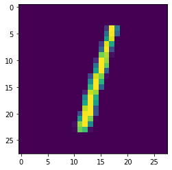
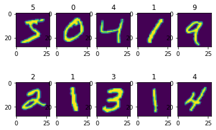
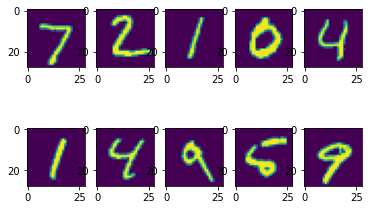

MNIST (Mixed National Institute of Standards and Technology database)
参考链接：
http://yann.lecun.com/exdb/mnist/
https://stackoverflow.com/questions/40427435/extract-images-from-idx3-ubyte-file-or-gzip-via-python
下载
import glob
path = glob.glob('./../data/MNIST/raw/*.gz')
path
['./../data/MNIST/raw/t10k-images-idx3-ubyte.gz',
'./../data/MNIST/raw/train-images-idx3-ubyte.gz',
'./../data/MNIST/raw/train-labels-idx1-ubyte.gz',
'./../data/MNIST/raw/t10k-labels-idx1-ubyte.gz']
# train-images-idx3-ubyte.gz # 60000张训练集图片
# train-labels-idx1-ubyte.gz # 60000张训练集图片对应的标签
# t10k-images-idx3-ubyte.gz # 10000张测试集图片
# t10k-labels-idx1-ubyte.gz # 10000张测试集图片对应的标签
解压
# train-images-idx3-ubyte
# train-labels-idx1-ubyte
# t10k-images-idx3-ubyte
# t10k-labels-idx1-ubyte
Load data
下载下来的 MNIST 数据集，有 4 个压缩文件，如果读取？
import gzip
f = gzip.open(path[0],'r')
image_size = 28
num_images = 5
import numpy as np
f.read(16) # 忽略前 16 字节
buf = f.read(image_size * image_size * num_images)
data = np.frombuffer(buf, dtype=np.uint8).astype(np.float32)
data = data.reshape(num_images, image_size, image_size, 1)
data.shape
(5, 28, 28, 1)
import matplotlib.pyplot as plt
image = np.asarray(data[2]).squeeze()
plt.imshow(image)
plt.show()

加载全部数据
The basic format is
magic number
size in dimension 0
size in dimension 1
size in dimension 2
.....
size in dimension N
data
import gzip
import numpy as np
def training_images():
with gzip.open('./../data/MNIST/raw/train-images-idx3-ubyte.gz', 'r') as f:
# first 4 bytes is a magic number
magic_number = int.from_bytes(f.read(4), 'big')
print(magic_number)
# second 4 bytes is the number of images
image_count = int.from_bytes(f.read(4), 'big')
print(image_count)
# third 4 bytes is the row count
row_count = int.from_bytes(f.read(4), 'big')
print(row_count)
# fourth 4 bytes is the column count
column_count = int.from_bytes(f.read(4), 'big')
print(column_count)
# rest is the image pixel data, each pixel is stored as an unsigned byte
# pixel values are 0 to 255
image_data = f.read()
images = np.frombuffer(image_data, dtype=np.uint8).reshape((image_count, row_count, column_count))
return images
X_train = training_images()
2051
60000
28
28
X_train.shape
(60000, 28, 28)
def training_labels():
with gzip.open('../data/MNIST/raw/train-labels-idx1-ubyte.gz', 'r') as f:
# first 4 bytes is a magic number
magic_number = int.from_bytes(f.read(4), 'big')
# second 4 bytes is the number of labels
label_count = int.from_bytes(f.read(4), 'big')
# rest is the label data, each label is stored as unsigned byte
# label values are 0 to 9
label_data = f.read()
labels = np.frombuffer(label_data, dtype=np.uint8)
return labels
y_train = training_labels()
y_train.shape
(60000,)
plt.figure()
for i in range(1,11):
plt.subplot(2, 5, i)
plt.imshow(X_train[i-1, :, :])
plt.title(y_train[i-1])

加载测试集同理
import gzip
import numpy as np
def testing_images():
with gzip.open('./../data/MNIST/raw/t10k-images-idx3-ubyte.gz', 'r') as f:
# first 4 bytes is a magic number
magic_number = int.from_bytes(f.read(4), 'big')
print(magic_number)
# second 4 bytes is the number of images
image_count = int.from_bytes(f.read(4), 'big')
print(image_count)
# third 4 bytes is the row count
row_count = int.from_bytes(f.read(4), 'big')
print(row_count)
# fourth 4 bytes is the column count
column_count = int.from_bytes(f.read(4), 'big')
print(column_count)
# rest is the image pixel data, each pixel is stored as an unsigned byte
# pixel values are 0 to 255
image_data = f.read()
images = np.frombuffer(image_data, dtype=np.uint8).reshape((image_count, row_count, column_count))
return images
X_test = testing_images()
2051
10000
28
28
X_test.shape
(10000, 28, 28)
plt.figure()
for i in range(1,11):
plt.subplot(2, 5, i)
plt.imshow(X_test[i-1, :, :])
